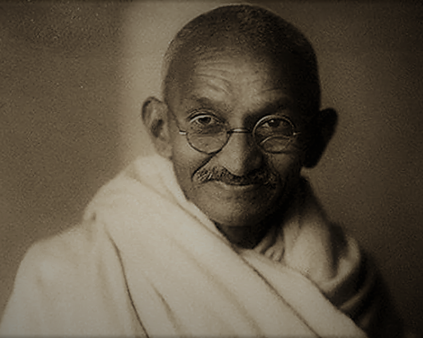

Mohandas Karamchand Gandhi
An Architect of Satyagraha

A Brief History Of Mahatma Gandhi
- 2ND OCTOBER 1869-BORN AT PORBANDAR TO KARAMCHAND UTTAMCHAND AND PUTLIBAI GANDHI
- 1874-SHIFTED TO RAJKOT
- 1883-GOT MARRIED TO KASTURBAI MAKHANJI KAPADIA.
- 1885-FATHER DIED.
- 1887-GRADUATED FROM AHMEDABAD HIGH SCHOOL.
- 1888-1891-LEFT FOR LONDON TO STUDY LAW.
- 1891-STARTED PRACTISING LAW IN BOMBAY.
- 7TH JUNE 1893-GANDHI JI WAS FORCIBLY REMOVED FROM FIRST CLASS COMPARTMENT OF A TRAIN AT A STATION IN PIETERMARITZBURG.
- 1894-FOUNDED NATAL INDIAN CONGRESS.
- 1897-REACHED DURAN WAS ATTACKED BY GROUP OF WHITES.
- 1899-1900-BOER WAR. ORGANISED INDIAN AMBULANCE CORP. AWARDED KAISAR-E-HIND.
- 1901-JOHANNESBURG TO PRACTISE LAW.
- 1903-1904-STARTED INDIAN OPINION, NEWSPAPER AND PHOENIX FARM.
- 1906-FIRST SATYAGRAHA. THE FIRST CIVIL DISOBEDIENCE MASS MOVEMENT IN SOUTH AFRICA AGAINST COMPULSORY CERTIFICATES OF REGISTRATION.
- 1908-CAMPAIGNED AGAINST ANTI-INDIAN IMMIGRATION LAW.
- 1910-ESTABLISHED TOLSTOY FARM NEAR JOHENSBERG WITH THE HELP OF HIS GERMAN FRIEND HERMANN KALLENBACH.
- 1913-1914-GANDHI JI WAS JAILED BUT MADE GENERAL JAN CHRISTIAN SMUT TO NEGOTIATE AND ACCEPT THE DEMANDS OF INDIANS THAT INCLUDED HINDU MARRIAGES AND ABOLITION OF POLL TAX. THIS WAS LAST SATYAGRAHA OF HIM IN SOUTH AFRICA.
- 9TH JANUARY 1915-GANDHI JI REACHED INDIA AT APOLLO BUNDER BOMBAY.
- 1916-SATYAGRAHA ASHRAM AT SABARMATI.
- 1917-FIRST SATYAGRAHA, CHAMPARAN.INVITED BY RAJKUMAR SHUKLA. AGAINST TINKATIA SYSTEM.
- 1918-FIRST HUNGER STRIKE. AHMEDABAD MILL STRIKE. ASSISTED BY ANUSAYA BEHN.
- 1918-FIRST NON-COOPERATION MOVEMENT. KHEDA SATYAGRAHA. HE ACTED AS PRESIDENT. INDULAL YAGNIK AND SARDAR PATEL WERE HIS ASSOCIATES.
- 1919-FOUNDED SATYAGRAHA SABHA. THE FIRST PAN INDIA MOVEMENT. A MASS STRIKE AGAINST THE ANARCHICAL AND REVOLUTIONARY CRIMES ACT. THE ROWLATT ACT.
- 1920-KHILAFAT MOVEMENT. IN JUNE 1920 HE BECAME THE PRESIDENT OF ALL INDIA KHILAFAT COMMITTEE.
- 1920-NON COOPERATION MOVEMENT. BAL GANGADHAR TILAK DIED ON 1ST AUGUST 1920, THE DAY OF LAUNCH OF THE NON-COOPERATION MOVEMENT. TILAK SWARAJ FUND ESTABLISHED.
- 1922-SUSPENDED NON-COOPERATION MOVEMENT DUE TO CHAURI CHAURA INCIDENT ON 5TH FEBRUARY 1922. GANDHI JI WAS IMPRISONED FOR 6 YEARS.
- 1924-GOVERNMENT RELEASES GANDHI JI. BECAME PRESIDENT OF INDIAN NATIONAL CONGRESS. SUGGESTS THAT CONGRESS CONCENTRATE ON CONSTRUCTIVE PROGRAMS FOR NEXT FIVE YEARS.
- 1929-GANDHI JI PREPARED A RESOLUTION-THE WORD SWARAJ IN ARTICLE- 1 OF THE CONGRESS CONSTITUTION MEANS COMPLETE INDEPENDENCE.
- 12TH MARCH 1930-CIVIL DISOBEDIENCE MOVEMENT-DANDI MARCH OR SALT SAYTAGRAHA. STARTED FROM SABARMATI.
- 6TH APRIL 1930-SALT SATYAGRAHA COMPLETED AT DANDI.
- 1930-TIME MAGAZINE’S MAN OF THE YEAR
- 5TH MARCH 1931-GANDHI-IRWIN PACT OR DELHI PACT.
- 24TH MARCH 1931-BHAGAT SINGH, RAJGURU AND SUKHDEV EXECUTED.
- 7TH NOVEMBER 1931-SECOND ROUND TABLE CONFERENCE.
- 1932-COMMUNAL AWARD AND POONA PACT.
- 1932-FOUNDED HARIJAN SEVAK SANGH
- 1933-STARTED HARIJAN NEWSPAPER. SHIFTED TO SEVAGRAM ASHRAM NEAR WARDHA.
- 1934-FORMALLY LEFT CONGRESS.
- 1940-LAUNCHED INDIVIDUAL SATYAGRAHA. A CHALO DELHI MOVEMENT. ACHARYA VINOBA BHAVE WAS THHE FIRST, NEHRU WAS SECON AND BRAHMA DUTT WAS THE THIRD INDIVIDUAL SATYAGRAHI.
- 1942-CRIPPS MISSION. GANDHI JI CALLED IT A POST DATED CHEQUE.
- 1942-QUIT INDIA MOVEMENT OR REVOLT OF 1942 OR AUGUST KRANTI. GANDHI JI GAVE THE SLOGAN OF DO OR DIE.
- 9TH AUGUST 1942-GANDHI JI ALONG WITH HIS ASSOCIATES WAS ARRESTED AND JAILED AT AGA KHAN PALACE.
- 1944-MAHADEV DEASI HIS SECERETAY AND HIS WIFE DIED AT AGA KHAN PALACE. AFTER 19 MONTHS HE WAS RELEASED.
- 1944-RAJAGOPALACHARI FORMULA, SUPPORTED BY GANDHI JI.
- 9-27TH SEPTEMBER 1944-GANDHI-JINNAH TALKS.
- 9-27TH SEPTEMBER 1944-GANDHI-JINNAH TALKS.
- 1945-WAVELL PLAN OR SHIMLA CONFERENCE.
- 1946-CABINET MISSION PLAN.
- 16TH AUGUST 1946-DIRECT ACTION DAY BY MUSLIM LEAGUE.
- 1946-1947-INTERM GOVERNMENT.
- 1946-1950-CONSTITUENT ASSEMBLY.
- 1947-3RD JUNE PLAN.
- 1947-INDIAN INDEPENDENCE ACT.
- 30TH JANUARY 1948-GANDHI JI WAS ASSISNATED.